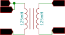

Mutual Inductance
Study Electromagnetic induction using two solenoids and the waveform generators
Schematic

Make the connections to the solenoid as shown in the figure.
Now set the frequency of W1 to 1KHz . The oscillating potential difference across coil A , also called the primary, results in an oscillating magnetic field.
Now place the second coil , the secondary, in front of the primary coil such that their magnetic axes are aligned.
Observe the induced EMF in the secondary, and its correlation to the primary. Try reversing the solenoid direction.
Confirm that a fixed magnetic field does not induce a voltage, and that the induced voltage is proportional to changing fields only. You can do this by connecting the primary to PV1 rather than W1, and setting a voltage on it.